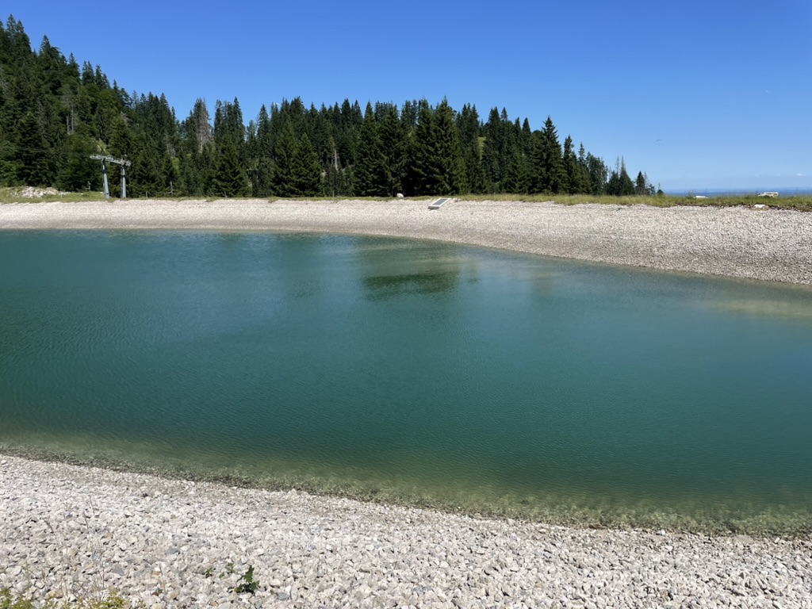

Chapter 4: A Negative Divergence in the Vector Field

Your ascent is exhausting you. You are drenched in sweat, your legs are shaking, and the sun is beating down on the back of your neck like a branding iron.
Along the way, you find a pool of water called an alpine lake. You are struck by the serene and beautiful landscape and the crystal clear water. Young men and women gather
and sunbathe on the banks of the lake, occasionally taking dips in the cool, blue water. You stop yourself, overcome by the beauty of the people and the landscape,
but also your sheer exhaustion.
It's good to stop, and you deserve the break. You will need the energy to continue along your journey. Take your time and relax. Try to make some friends. Eat some good food.
Keep in the back of your mind though, many young men and women drown in these lakes and never achieve their goals of surmounting the peaks.
Chapter 5: The Normal Vector of Hatred and Resentment
Title Page